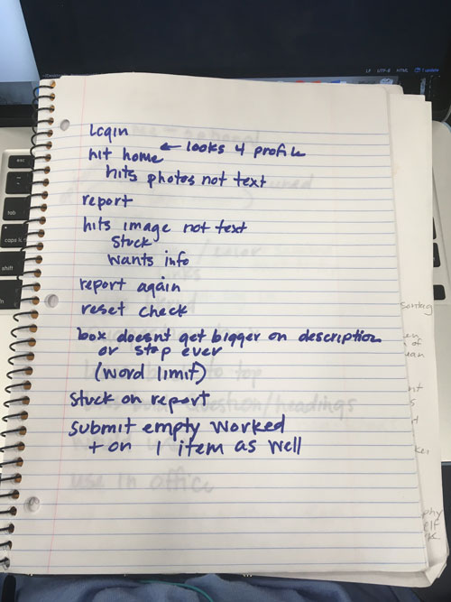
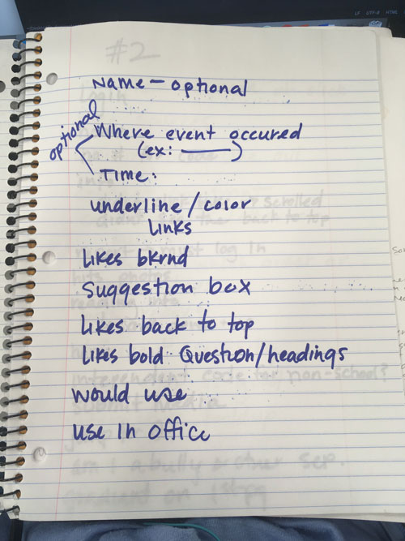
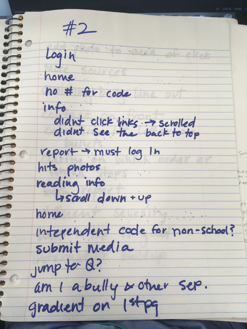
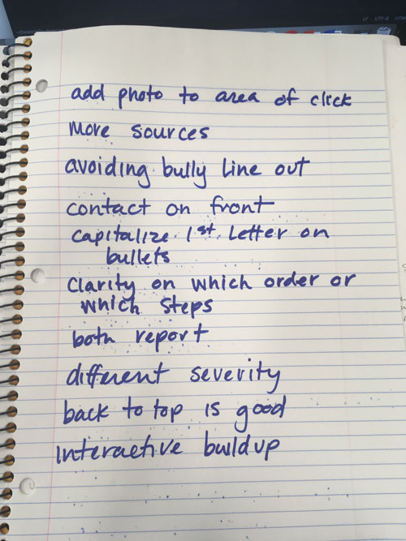

Audience Test Results
The audience testing was a huge help! Rocket and Penelope were awesome testers and had wonderful ideas and fixes to my site. Especially since I had been getting help from Rocket as I was working. Here is a list of things I plan to fix on my site, some now and some if I continue on with this project:
- make a word limit on description box
- make the icons in nav clickable
- make a user profile page
- an alert if the report page doesn't get inputs
- delete the name input box on report since you're logged in but give the option to submit as anonymous
- give an example on location and change it to "where event occured"
- make the time and location optional
- make links on info page another color
- make a place for suggestions or contacting company
- make a desktop version to be found in school office to use
- tell user the school code is numbers only
- be able to submit media on report
- fix gradient on first page
- fix some logistical ideas on the info questions
- add extra sources to the info page
- capitalize first letter on each bullet point
- make logo interactive
I was happy to get both kids' feedback since Penelope focussed on the reporting page and if her age group would use it while Rocket focussed on the info page, reading each sentence for errors. Their input was priceless and I'm grateful for their time.
photos of the notes during testin
Penelope:


Rocket:

